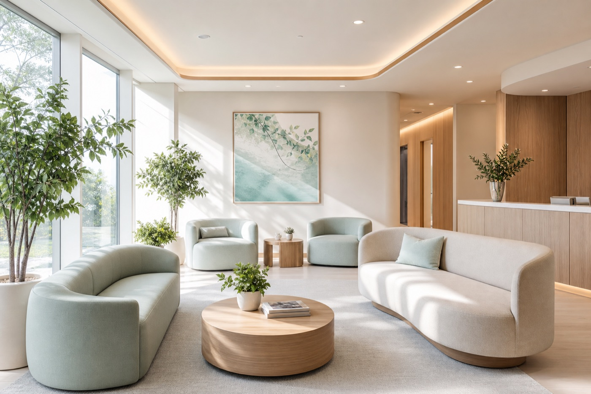

Midori Clinic ／ Internal Medicine & Pediatrics
「これくらいで受診していいのかな」——そう迷ったときこそ、どうぞ。ひとつひとつのご不安に、時間をかけて向き合う診療所です。

Reservation
WEB予約・当日受付可
Saturday
土曜も午前診療
Access
駅南口より徒歩3分
小さな不安を、小さいうちに。
それが、地域のかかりつけ医の役目だと考えています。
体調のことは、誰かに話すだけで少し軽くなるもの。だからこそ私たちは、検査や診断の前に、まず「話しやすい空気」を大切にしています。気になることは、どんな小さなことでも構いません。
01
むずかしい言葉は使いません。検査の意味も、これからの見通しも、ご納得いただけるまでお話しします。
02
WEB予約と受付状況の共有で、待合の時間をできるだけ短く。体調のつらい日の負担を減らします。
03
発熱の方の動線を分け、こまめな消毒を徹底。お子さまやご高齢の方にも安心の環境を整えています。
日常のあらゆる不調の、はじめの相談先として。
かぜ・発熱・せき・腹痛などの急な不調から、健診結果のご相談まで。
お子さまの発熱・体調不良、育児やご家庭でのご心配ごとにも。
各種ワクチン、健康診断、生活習慣のチェックに対応します。
血圧・血糖・コレステロールなど、継続的な管理をお手伝いします。
はじめての方にも、安心してお過ごしいただくために。
発熱・感染症状のある方の待機スペースと動線を分け、院内感染に配慮しています。
お子さま連れでも安心。待合には、静かに過ごせる小さなスペースをご用意しています。
段差のない院内と広めのお手洗い。車椅子・ベビーカーでもご利用いただけます。
※院内設備の内容はレイアウトを見せるための架空サンプルです。実在の医療機関ではありません。
Step 01
24時間いつでも。保険証をご準備ください。
Step 02
気になることを、遠慮なくお書きください。
Step 03
お話をよく伺い、必要な検査を行います。
Step 04
次回の目安もお伝えします。おだいじに。
Director
院長・架空 花子（内科医）
病院は、緊張する場所かもしれません。だからこそ当院では、まず不安を言葉にできる雰囲気づくりを心がけています。
気になることは、どんな小さなことでも構いません。地域の「はじめに相談できる場所」であること。それが、私たちの変わらない願いです。
Consultation Hours
Location
みどりクリニック〒000-0000
◯◯県◯◯市◯◯町1-2-3 ◯◯ビル2F
◯◯線「◯◯駅」南口より徒歩3分
提携駐車場あり（8台）
※所在地・診療時間・連絡先はすべて架空のサンプルです。実在の医療機関ではありません。